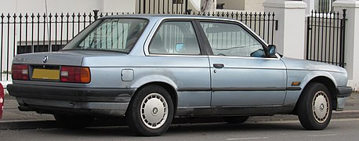
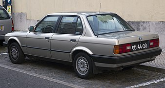
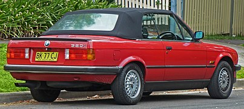

BMW 3 Series (E30)
From Wikipedia, the free encyclopedia
The BMW E30 is the second generation of BMW 3 Series, which was produced from 1982-1994 and replaced the E21 3 Series.
The model range included coupe and convertible body styles, as well as being the first 3 Series to be produced in sedan
and wagon/estate body styles. It was powered by four-cylinder petrol, six-cylinder petrol and six-cylinder diesel engines,
the latter a first for the 3 Series. The E30 325iX model was the first 3 Series to have all-wheel drive.
The first BMW M3 model was built on the E30 platform and was powered by the high-revving BMW S14 four-cylinder petrol engine,
which produced 175 kW (235 bhp) in its final European-only iteration. The BMW Z1 roadster was also based on the E30 platform.
Following the launch of the E36 3 Series in 1990, the E30 began to be phased out.
Development and launch
Development of the E30 3 Series began in July 1976, with styling being developed under chief designer Claus Luthe
with exterior styling led by Boyke Boyer. In 1978, the final design was approved, with design freeze (cubing process)
being completed in 1979. BMW's launch film for the E30 shows the design process including Computer-aided design (CAD),
crash testing and wind-tunnel testing. The car was released at the end of November 1982.
Externally, the E30's appearance is very similar to twin headlight versions of its E21 predecessor, however there are
various detail changes in styling to the E30. Major differences to the E21 include the interior and a revised suspension,
the latter to reduce the oversteer for which the E21 was criticised.
Body styles
In addition to the two-door sedan and Baur convertible body styles of its E21 predecessors, the E30 was also available as a four-door
sedan and five-door station wagon (marketed as "Touring").
The Touring body style began life as a prototype built by BMW engineer Max Reisböck in his friend's garage in 1984 and began production in 1987.
The factory convertible version began production in 1985, with the Baur convertible conversions remaining available alongside it.
|  |
 |
 |
 |